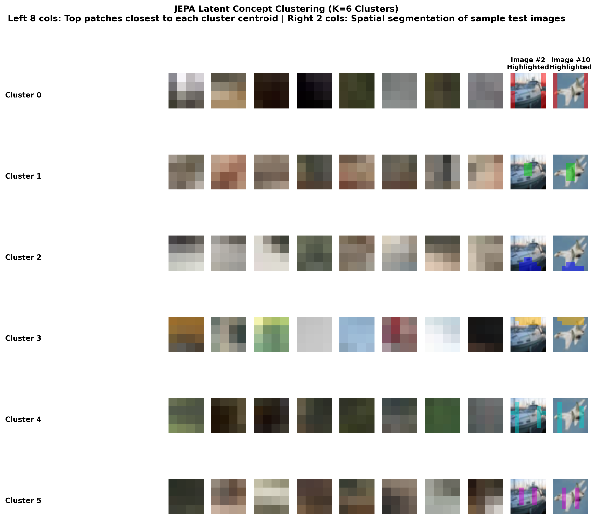
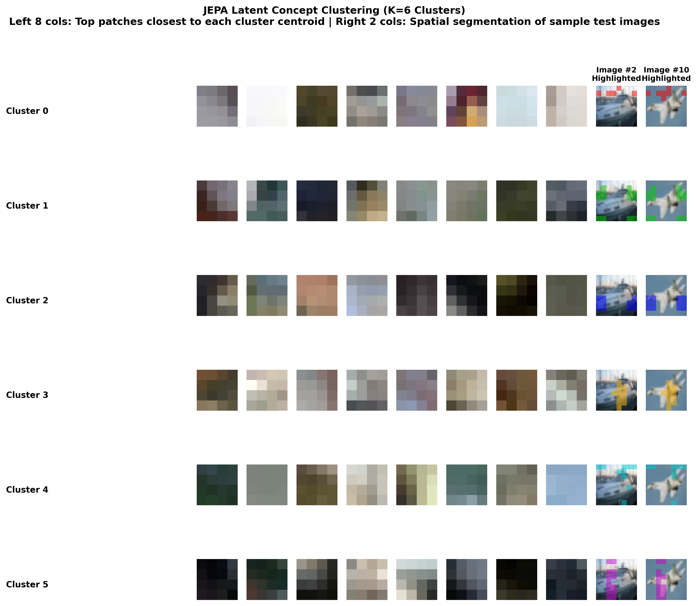

Série I-JEPA — Article 5 : Ouvrir la boîte noire (XAI) Dans cette deuxième partie, nous démontrons le pouvoir le plus spectaculaire de l'apprentissage auto-supervisé : la capacité du réseau à regrouper et structurer le monde tout seul. Grâce à un algorithme de clustering appliqué aux représentations de patches, nous verrons émerger des concepts sémantiques clairs sans qu'aucun humain n'ait jamais donné le moindre nom.
🤷♂️ Comment prouver l'intelligence sans étiquettes ?
Lorsqu'un bébé apprend à observer son environnement, personne ne lui répète en boucle le nom de chaque pixel qu'il voit. Pourtant, il comprend très vite la différence entre du feuillage, du ciel, la texture d'un tapis ou le pelage d'un animal.
C'est exactement ce que nous cherchons à valider chez notre JEPA. A-t-il structuré son espace latent pour regrouper les choses similaires ?
Pour le vérifier, nous mettons en place une expérience de clustering non supervisé :
- Nous faisons passer 300 images de test CIFAR-10 dans l'encodeur de contexte gelé de notre JEPA.
- Chaque image est découpée en 64 patches. Nous extrayons ainsi $300 \times 64 = 19\ 200$ vecteurs de caractéristiques (embeddings de dimension 192).
- Nous appliquons l'algorithme des K-Means (implémenté en PyTorch accéléré sur GPU) pour regrouper ces 19 200 points dans $K = 6$ clusters distincts.
- Pour chaque cluster, nous extrayons les 8 patches les plus proches du centre géométrique (les centroïdes).
🛠️ Dans les
entrailles du code : jepa_lab/visualize_latent_concepts.py
Le script visualize_latent_concepts.py réalise ce partitionnement
mathématique.
1. Le calcul ultra-rapide des distances sur GPU :
La fonction kmeans_pytorch utilise des calculs de distance matricielle
condensés
(torch.cdist) pour regrouper nos 19 200 patches :
def kmeans_pytorch(X, K, num_iters=100, device='cpu'):
centroids = X[torch.randperm(X.shape[0])[:K]].clone()
for i in range(num_iters):
# 1. Calculer la distance de chaque point à chaque centroïde
dist = torch.cdist(X, centroids) # (N, K)
# 2. Assigner chaque point au centroïde le plus proche
labels = torch.argmin(dist, dim=1) # (N,)
# 3. Mettre à jour les centroïdes (moyenne des points assignés)
new_centroids = torch.zeros_like(centroids)
for k in range(K):
mask = (labels == k)
if mask.sum() > 0:
new_centroids[k] = X[mask].mean(dim=0)
# ...
return centroids, labels
🧩 Les concepts sémantiques émergents (Le résultat visuel)

Figure 1 : Visualisation des concepts émergents et segmentation spontanée avec JEPA Mono-cible.
Figure 2 : Visualisation des concepts émergents et segmentation spontanée avec JEPA Multi-cible.- L'Idéal Théorique (Spéculation sur Modèles à Grande Échelle) : Dans le cadre d'un modèle de grande taille (ex: ViT-B) entraîné sur un très grand jeu de données (comme ImageNet) avec un temps d'entraînement très long, on s'attendrait à une séparation sémantique pure. Le réseau isolerait alors spontanément des concepts abstraits indépendants de la position : le Ciel (bleu pur), la Verdure (feuillage), les Pneus (cercles sombres) ou les Pelages.
- La Réalité Expérimentale (Ce que montrent nos illustrations CIFAR-10) :
Sur notre modèle de laboratoire entraîné sur CIFAR-10 ($32\times 32$), les clusters
réels (Figures 1 & 2) révèlent à l'inverse une forte influence géométrique et
spatiale. Les Positional Embeddings dominent encore l'espace
latent face aux caractéristiques purement sémantiques. C'est exactement ce que nous
observons sur les illustrations :
- Cluster 0 (Bords & Coins Latéraux - Rouge) : Cible les contours verticaux et les coins de l'image (les bandes rouges sur les flancs gauche et droit des images du bateau et de l'avion).
- Cluster 1 (Centre de l'objet - Vert) : Capte le cœur géométrique central (la cabine verte du bateau et le fuselage vert de l'avion de chasse).
- Cluster 2 (Base & Horizon - Bleu) : Se concentre sur la partie inférieure de l'image (la mer sous le bateau, le tarmac sous le jet, colorés en bleu).
- Cluster 3 (Ciel Supérieur - Jaune) : Isole la partie haute (le ciel jaune au-dessus des véhicules).
- Clusters 4 & 5 (Colonnes Verticales - Cyan & Magenta) : Forcent des segmentations sous forme de bandes verticales symétriques réparties à gauche et à droite.
💡 Leçon Pédagogique : Le conflit Position vs Sémantique
Ce phénomène montre que pour des petits modèles entraînés sur peu de données, le JEPA
apprend d'abord la géométrie et la position des zones ("où" se trouvent les
choses) avant de raffiner les textures sémantiques pures ("ce que" sont les
choses). C'est une étape intermédiaire naturelle vers la segmentation d'objets !
🎨 Segmentation Sémantique Spontanée
Le script applique ensuite ces clusters comme des masques de couleur sur deux images entières de test (Image #2 - bateau et Image #10 - avion de chasse) à l'extrême droite des figures :
Par exemple, le masque du Cluster 1 (Vert) recouvre précisément la silhouette centrale des véhicules, tandis que le Cluster 2 (Bleu) isole la zone de support inférieure (l'eau ou le tarmac).
Même si cette segmentation est encore hybride (mi-spatiale, mi-sémantique) en raison de la taille réduite de notre modèle de laboratoire, elle prouve que le JEPA regroupe de lui-même des pixels de manière cohérente et spontanée. Il sait isoler le sujet de son arrière-plan sans jamais avoir vu une seule annotation de contour humaine ou de type "ciel" ou "herbe" pendant son entraînement.
🧠 Conclusion & Transition
Le clustering d'embeddings prouve que les représentations de JEPA ne sont pas une simple collection de pixels. C'est une bibliothèque de concepts physiques et texturés organisée de manière géométrique.
Mais lorsque notre classifieur final prend une décision (par exemple, classer une image en tant que "bateau"), comment ces concepts sémantiques locaux se combinent-ils pour influencer cette décision globale ? Comment calculer la contribution mathématique exacte de chaque patch à la classification finale ?
C'est ce que nous allons explorer dans la troisième partie en analysant l'explicabilité par Global Average Pooling et les cartes d'influence de classification !
🛠️ Défi curieux n°2
Choisissez un objet complexe autour de vous (par exemple, un clavier d'ordinateur ou une
plante en pot). Si un algorithme devait regrouper les parties de cet objet en $K=3$
clusters uniquement basés sur la similarité visuelle (sans connaître le sens des mots
"touche" ou "feuille") :
1. Quels regroupements de pixels (clusters) imagineriez-vous émerger spontanément ?
2. Quelles informations fonctionnelles ou sémantiques (la fonction d'une touche, la
nature biologique d'une feuille) échapperaient complètement à ce simple tri géométrique
et visuel ?